Discover & clean up
Run the TUI without a names file to see everything AWS returns in a region. Sort, search, inspect details, and remove old leftovers.
aws-ssm-params --regions eu-north-1 tui
AWS Systems Manager Parameter Store, without the console fatigue
aws-ssm-params is a fast CLI/TUI for developers, DevOps engineers, and platform teams who manage
SecureString, String, and StringList parameters. Browse everything in a region, or focus on a known
application-specific name set with `--names` or `--names-file`.
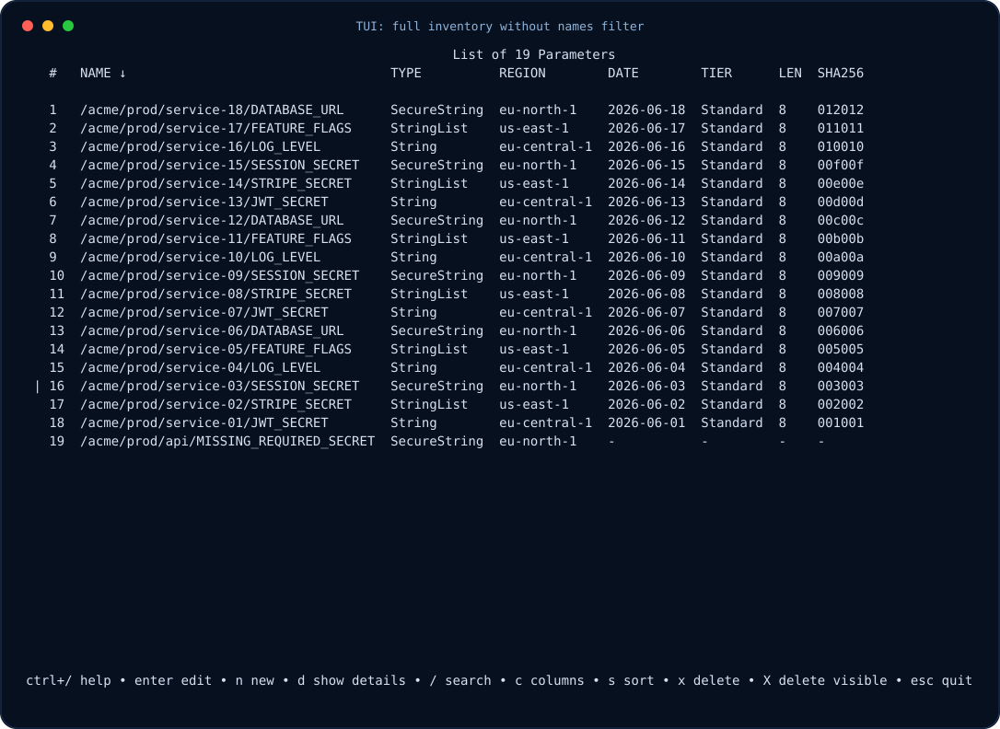
Why people use it
Run the TUI without a names file to see everything AWS returns in a region. Sort, search, inspect details, and remove old leftovers.
aws-ssm-params --regions eu-north-1 tui
Keep a versioned names file beside your service and check which required parameters are missing or empty before deploying.
aws-ssm-params --names-file names.txt tui
Check whether replicated services and DR regions have the same expected secret/configuration set.
aws-ssm-params --regions eu-north-1,eu-central-1 tui
Export dotenv/JSON, review it, and import into another account, region, or profile when onboarding environments.
aws-ssm-params export --to-file values.env
Quick start
No names file is required. Without --names or --names-file, the app discovers all visible SSM
parameters in the selected region. Add scope flags only when you want a focused application list.
# Browse everything visible in one region
aws-ssm-params --regions eu-north-1 tui
# Focus on a known service-specific set
aws-ssm-params --regions eu-north-1 --names-file names.txt tui
# Lightweight inventory view without loading values
aws-ssm-params --fields name,type,date,user --regions eu-north-1 tuiInteractive TUI
The TUI keeps values hidden by default, shows context-sensitive shortcuts, supports Emacs and Vi keymaps, and lets you work with values, metadata, policies, and file actions without leaving the terminal.
Discover all visible parameters or show only names from `--names` / `--names-file`. Sort, search, reveal details, create, edit, and delete.
Press `d` to inspect metadata, version, hash prefix, date, user, tier, type, policies, and value state.
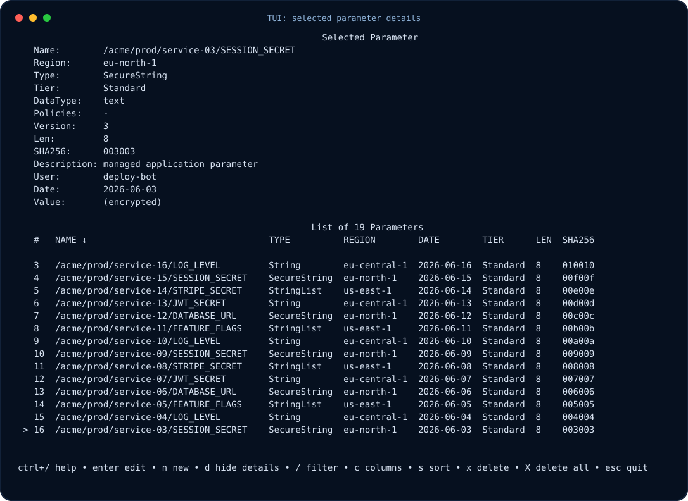
Choose visible columns with live preview. `--fields` limits what can appear anywhere in the TUI.
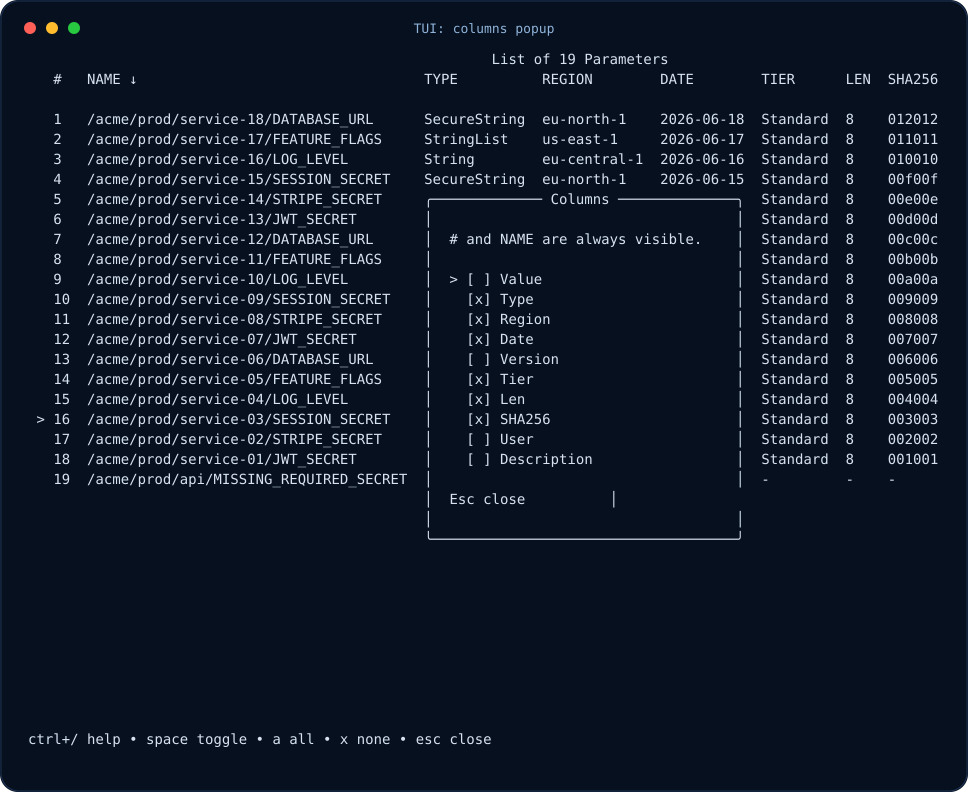
Sort by visible fields only. Repeating the same sort toggles ascending/descending and updates the arrow in the header.
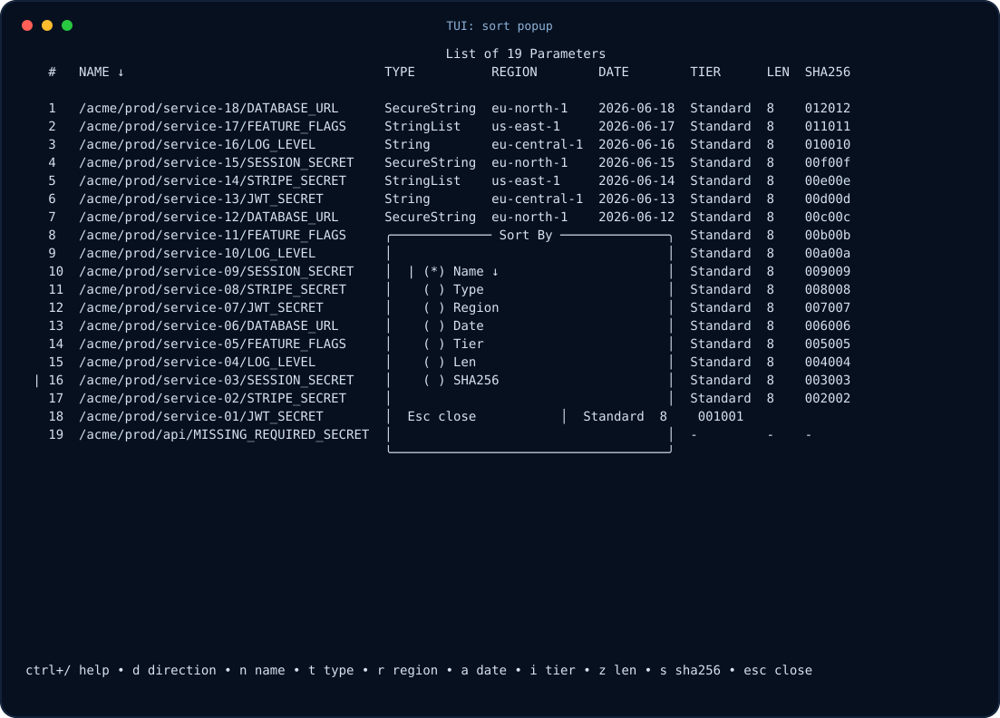
`ctrl+/` opens contextual help for the current page or popup, including navigation and action keys.
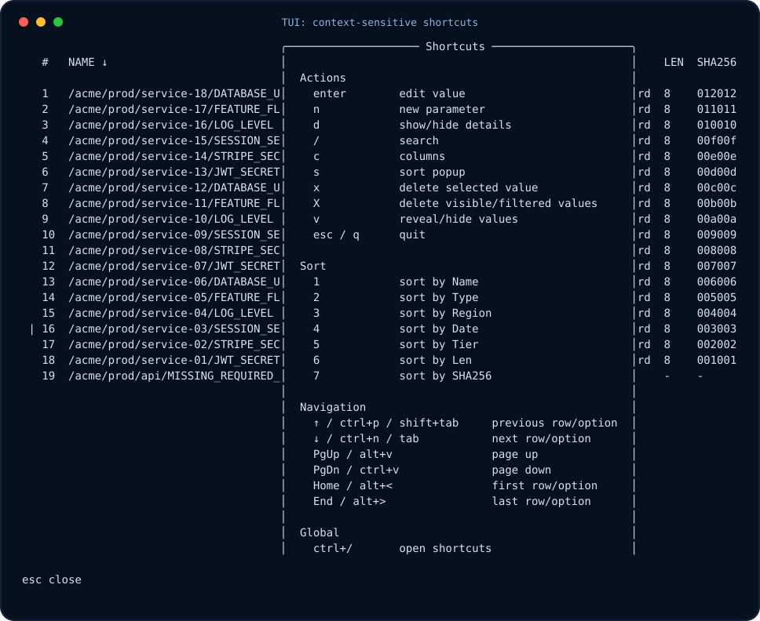
Edit value and metadata in one screen. Short fields stay inline; long or multiline fields expand into text areas.
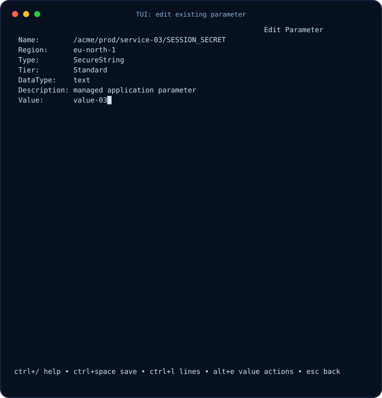
Create a missing value with explicit type, tier, data type, description, policies, and overwrite behavior.
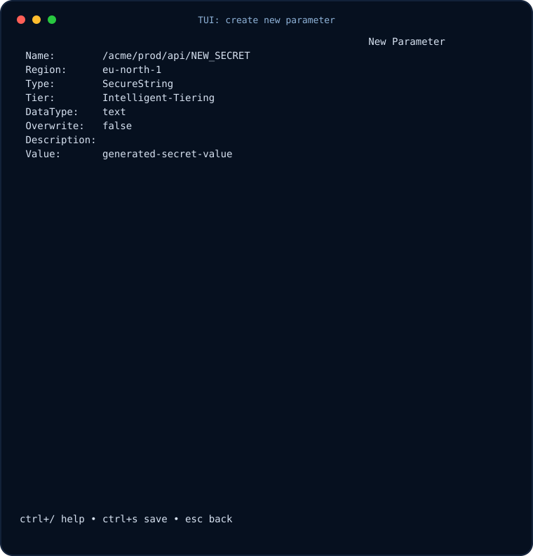
Clear, generate random secrets, load from file, or write to file. Risky file writes ask for confirmation.
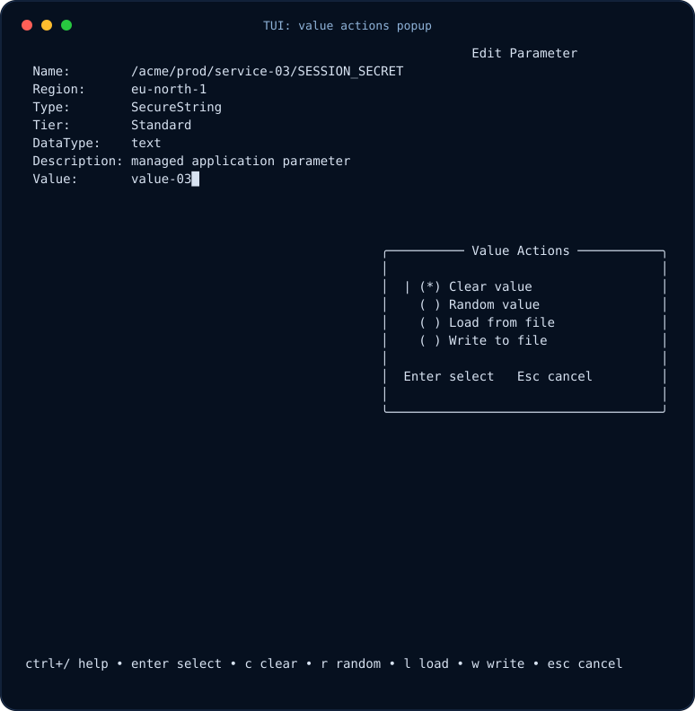
Advanced-tier parameter policies are shown as editable pretty JSON instead of AWS read-only wrapper metadata.
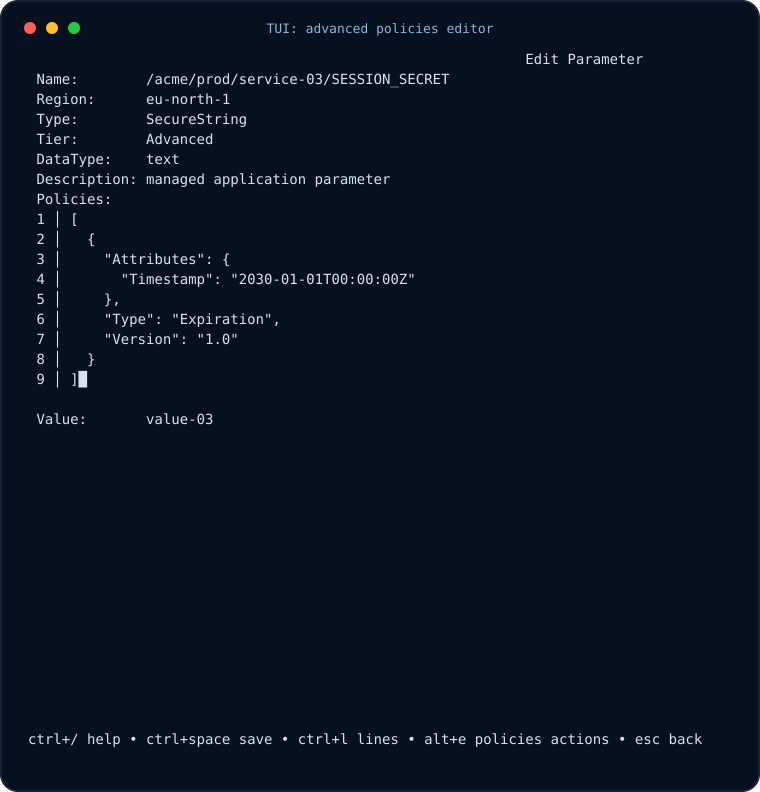
Clear, load, or write policy JSON from the same popup workflow used for values.
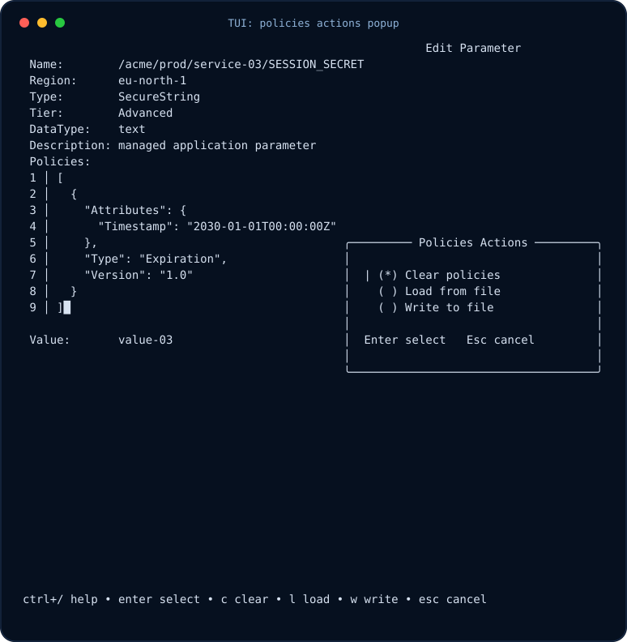
CLI commands
Global --names / --names-file and --fields scope every command. If --fields is omitted, all fields are available.
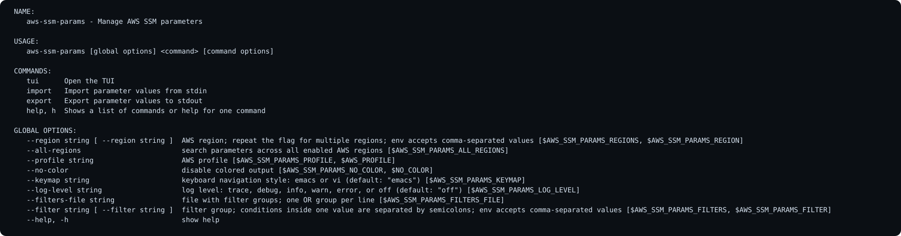
Export dotenv or JSON for review, backup, and migration.
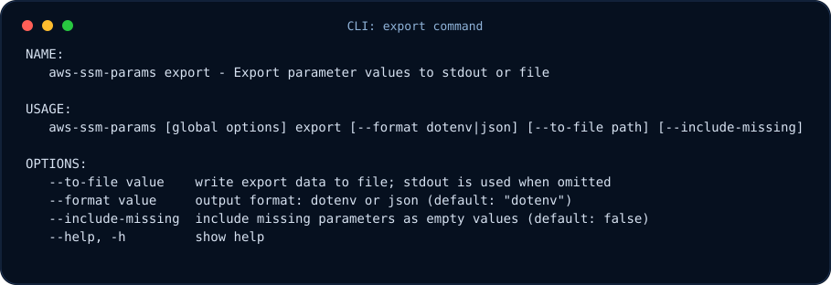
Import dotenv or JSON with safe overwrite defaults and optional metadata defaults.
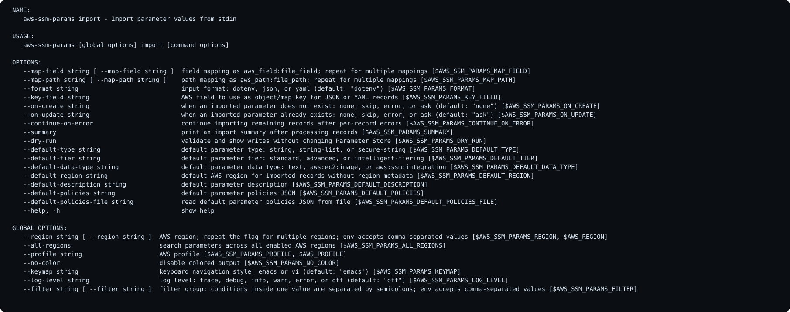
Set a single value from the command line or from a file.
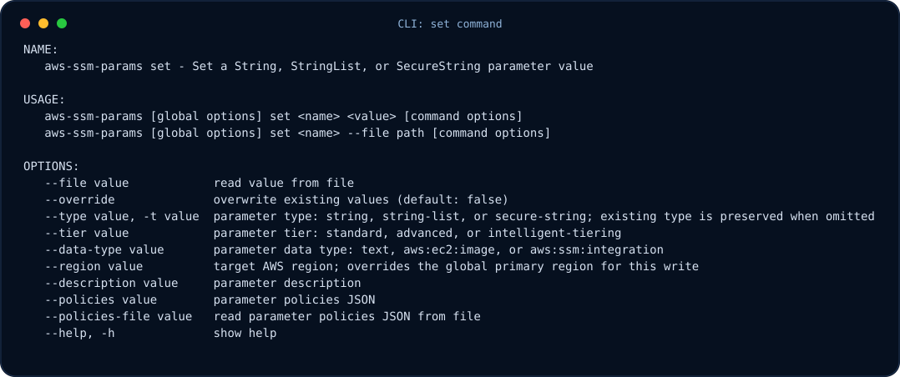
Read one value to stdout or write it directly to a local file.
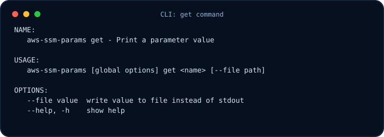
Security-first defaults
SecureString values are hidden by default in the TUI. Exports and write-to-file actions are intentionally explicit because they place plaintext secrets on disk.
--without-decryption when you do not have KMS decrypt permissions.--override and delete operations carefully.